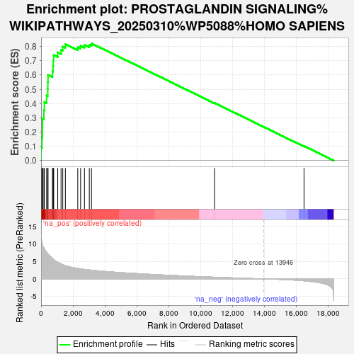
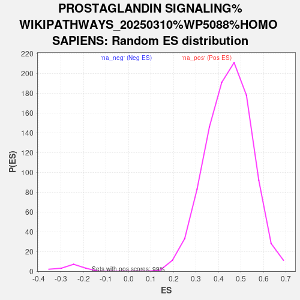

| | | Dataset | ranked_genes |
| Phenotype | NoPhenotypeAvailable |
| Upregulated in class | na_pos |
| GeneSet | PROSTAGLANDIN SIGNALING%WIKIPATHWAYS_20250310%WP5088%HOMO SAPIENS |
| Enrichment Score (ES) | 0.82167643 |
| Normalized Enrichment Score (NES) | 1.8467317 |
| Nominal p-value | 0.0 |
| FDR q-value | 0.0 |
| FWER p-Value | 0.0 |
Table: GSEA Results Summary

Fig 1: Enrichment plot: PROSTAGLANDIN SIGNALING%WIKIPATHWAYS_20250310%WP5088%HOMO SAPIENS
Profile of the Running ES Score & Positions of GeneSet Members on the Rank Ordered List
| SYMBOL | RANK IN GENE LIST | RANK METRIC SCORE | RUNNING ES | CORE ENRICHMENT | | 1 | CCL3 | 3 | 12.862 | 0.0894 | Yes |
| 2 | TNF | 54 | 10.450 | 0.1594 | Yes |
| 3 | CASP1 | 84 | 9.875 | 0.2265 | Yes |
| 4 | IL1B | 89 | 9.802 | 0.2945 | Yes |
| 5 | KLRD1 | 176 | 8.875 | 0.3516 | Yes |
| 6 | CXCL10 | 207 | 8.611 | 0.4099 | Yes |
| 7 | NLRP3 | 347 | 7.641 | 0.4555 | Yes |
| 8 | CXCL9 | 419 | 7.183 | 0.5016 | Yes |
| 9 | PYCARD | 425 | 7.171 | 0.5513 | Yes |
| 10 | CXCL1 | 436 | 7.077 | 0.6000 | Yes |
| 11 | CSF1 | 712 | 5.869 | 0.6258 | Yes |
| 12 | CCR2 | 752 | 5.719 | 0.6635 | Yes |
| 13 | PIK3CG | 768 | 5.647 | 0.7020 | Yes |
| 14 | CD28 | 791 | 5.523 | 0.7392 | Yes |
| 15 | TGFB1 | 1044 | 4.728 | 0.7584 | Yes |
| 16 | PTGER4 | 1252 | 4.263 | 0.7767 | Yes |
| 17 | PTGER2 | 1359 | 4.034 | 0.7990 | Yes |
| 18 | AHR | 1522 | 3.762 | 0.8164 | Yes |
| 19 | NFKB1 | 2299 | 2.986 | 0.7948 | Yes |
| 20 | CCL2 | 2476 | 2.855 | 0.8050 | Yes |
| 21 | MMP9 | 2718 | 2.701 | 0.8107 | Yes |
| 22 | CXCL8 | 3022 | 2.540 | 0.8118 | Yes |
| 23 | IRF7 | 3158 | 2.481 | 0.8217 | Yes |
| 24 | PTGES | 10864 | 0.461 | 0.4040 | No |
| 25 | VEGFA | 16471 | -0.546 | 0.1016 | No |
Table: GSEA details [plain text format]

Fig 2: PROSTAGLANDIN SIGNALING%WIKIPATHWAYS_20250310%WP5088%HOMO SAPIENS: Random ES distribution
Gene set null distribution of ES for PROSTAGLANDIN SIGNALING%WIKIPATHWAYS_20250310%WP5088%HOMO SAPIENS